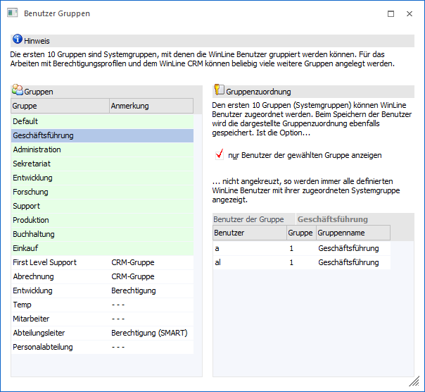
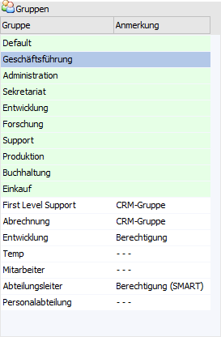
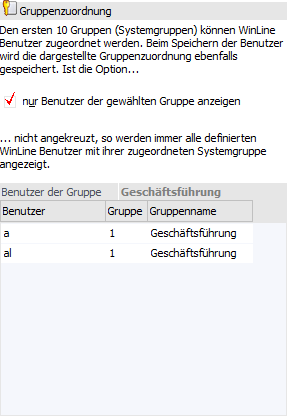
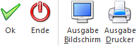

Im Menüpunkt…
1 Benutzer
1 Benutzer Gruppen
… können Benutzergruppen definiert werden, wobei zwischen System- und Berechtigungsgruppen bzw. Personengruppen unterschieden werden kann.
ü System-Benutzergruppen
Es gibt
10 Gruppen, in denen die WinLine Benutzer zugeordnet werden können. Diese 10
Gruppen sind fix vorgegeben, die Bezeichnung der 10 Gruppen ist frei
definierbar. Diese 10 Gruppen können auch für individuelle Programmanpassung
bzw. für das Sperren von Menüs etc. verwendet werden.
ü
Berechtigungs-Benutzergruppen
Diese Gruppen können für die Anlage von
Berechtigungsprofilen verwendet werden. Zusätzlich können die
Berechtigungs-Benutzergruppen oder Personengruppen auch für die
Berechtigungsvergabe von Workflows im WinLine CRM verwendet werden. Es können
beliebig viele Berechtigungsgruppen angelegt werden, wobei ein WinLine Benutzer
auch in mehreren Berechtigungsgruppen hinterlegt werden kann.

Tabelle "Gruppe"

In der Tabelle "Gruppe" können die einzelnen Benutzergruppen angelegt werden. Die ersten 10 Einträge (sind farblich anders dargestellt) sind dabei die "System-Benutzergruppen". Danach können beliebig viele "Berechtigungs-Benutzergruppen" bzw. "Personengruppen" angelegt werden, die in weiterer Folge für Berechtigungsprofile und für WinLine CRM verwendet werden können.
Hinweis
Mit Hilfe der Spalte "Anmerkung" können individuelle Anmerkungen pro Gruppe hinterlegt werden.
Tabelle "Gruppenzuordnung"

Ø nur Benutzer der gewählten Gruppe anzeigen
Über diese Option kann bestimmt werden, welche Benutzer in der rechten Tabelle angezeigt werden sollen. Ist die Option aktiviert, dann werden nur die Benutzer angezeigt, welche der aktuell ausgewählten Benutzergruppe zugeordnet sind.
Ø Tabelle
Abhängig von der Option "nur Benutzer der gewählten Gruppe" werden hier entweder alle Benutzer (mit der Systemgruppe) oder die aktuell zugeordneten Benutzer angezeigt.
Wenn die Option "nur Benutzer der gewählten Gruppe anzeigen" aktiviert ist, können durch einen Klick in die nächste freie Zeile der Tabelle der ausgewählten Gruppe auch neue Benutzer hinzugefügt werden. Dafür stehen die Autovervollständigung und der Matchcode nach allen Benutzern zur Verfügung.
Wenn es sich um eine Berechtigungs-/Personengruppe handelt, so wird durch das Speichern der Benutzer einfach der Gruppe hinzugefügt. Handelt es sich um eine Systemgruppe, dann wird der Benutzer der neuen Gruppe zugeordnet, und aus der "alten" entfernt.
Wenn man eine Berechtigungs-/Personengruppe ausgewählt hat und in der Tabelle auf eine bestehende Zeile klickt, dann kann der Eintrag auch durch Drücken der Entfernen-Taste gelöscht werden.
Buttons

Ø Ok
Durch Anwahl des "Ok"-Buttons bzw. der Taste F5 werden alle vorgenommenen Änderungen und Neuanlagen gespeichert.
Ø Ende
Durch Drücken des Buttons "Ende" oder der ESC-Taste wird das Fenster geschlossen. Eventuell vorgenommen Änderungen oder Neuanlagen werden nicht gespeichert.
Ø Ausgabe Bildschirm
Durch Anwahl des Buttons wird eine Liste aller Benutzergruppen (System- und Personengruppen) am Bildschirm ausgegeben, wobei pro Gruppe auch die zugeordneten Benutzer mit angezeigt werden. Per Formularanpassung kann auch die Anzahl der Benutzer pro Benutzergruppe angedruckt werden. Bei der Auswertung werden WEB-Benutzer nicht berücksichtigt.
Ø Ausgabe Drucker
Durch Anwahl des Buttons wird eine Liste aller Benutzergruppen (System- und Personengruppen) auf den Drucker / in den Spooler ausgegeben, wobei pro Gruppe auch die zugeordneten Benutzer mit angezeigt werden. Per Formularanpassung kann auch die Anzahl der Benutzer pro Benutzergruppe angedruckt werden. Bei der Auswertung werden WEB-Benutzer nicht berücksichtigt.